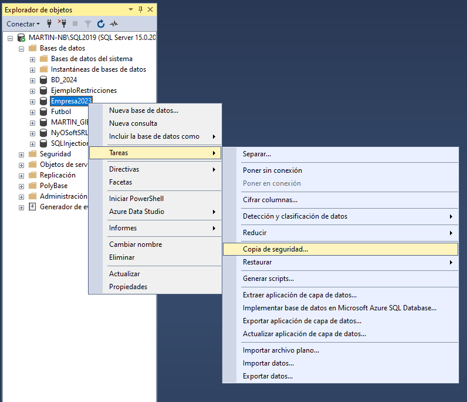
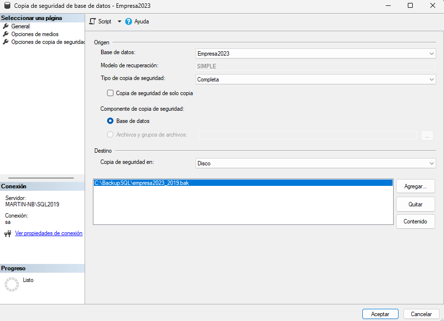
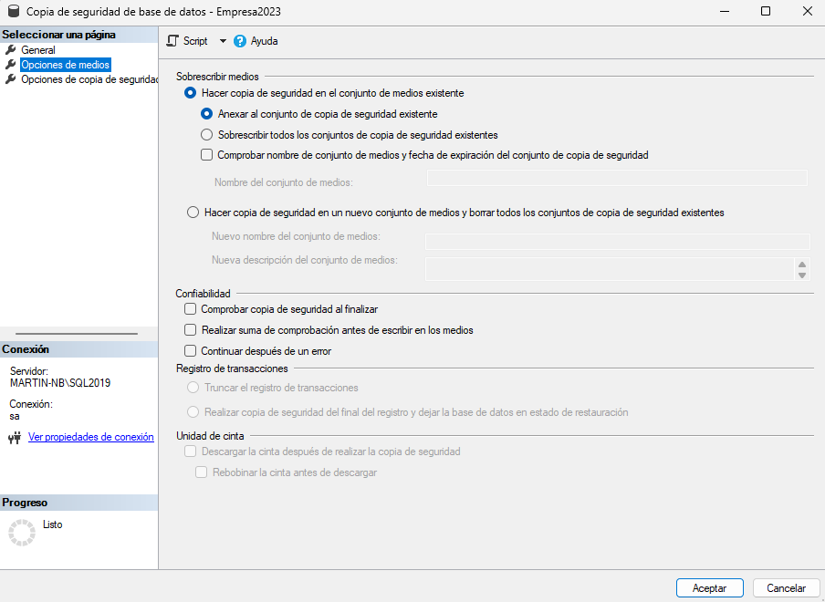
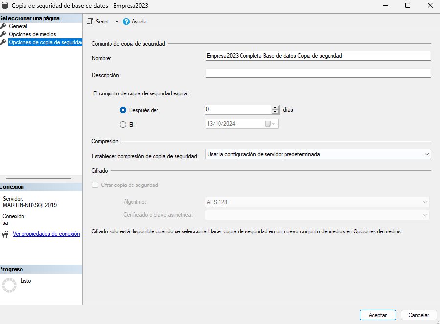

Protegé una base de datos con backups completos, diferenciales y del log de transacciones, desde SSMS o con T-SQL.
¿Qué es una copia de seguridad?
Un backup es una copia recuperable de una base de datos. Permite volver a disponer de la información ante corrupción, errores humanos, fallas de disco o pérdida del servidor.
Una estrategia de respaldo no consiste solamente en hacer un archivo .bak: hay que decidir qué tipo de backup usar, cada cuánto hacerlo y cuánto trabajo se está dispuesto a perder ante un incidente.
01 · PLANIFICAR
Definí el riesgo
Elegí el modelo de recuperación según la tolerancia a la pérdida de datos.
02 · RESPALDAR
Guardá una copia
Usá SSMS o un comando T-SQL y seleccioná un destino seguro.
03 · VERIFICAR
Comprobá el resultado
Revisá que el archivo se haya creado y que pueda restaurarse cuando haga falta.
⚠️
Conviene guardar las copias en una unidad externa al servidor. Si el backup queda solo en el mismo equipo, una falla de esa máquina puede afectar tanto la base como la copia.
Crear un backup desde SQL Server Management Studio
En el Explorador de objetos, hacé clic derecho sobre la base que querés proteger y elegí Tareas → Copia de seguridad. SSMS abrirá una ventana con las opciones principales.

1. Abrir el asistente. Elegí la base y accedé a Tareas → Copia de seguridad.

2. Configuración general. Revisá la base, el modelo de recuperación, el tipo y el destino.
Destino
Podés conservar la ruta propuesta o elegir otra ubicación.
Con más de un destino, el backup se divide en partes.
Para restaurar, necesitás todas las partes generadas.
Confiabilidad
Las opciones de medios permiten anexar o sobrescribir.
También se puede solicitar una comprobación de la copia.
Revisá cada ajuste antes de confirmar con Aceptar.

Opciones de medios. Indicá si se anexa a un conjunto existente o se sobrescribe.

Opciones de backup. Configurá vencimiento, compresión y, si corresponde, cifrado.
ℹ️
Un backup creado en una versión de SQL Server no se puede restaurar en una versión anterior.
Modelos de recuperación y tipos de backup
El modelo de recuperación define cómo se administra el log de transacciones y condiciona las opciones de recuperación disponibles.
Modelo SIMPLE
No permite backups del log de transacciones.
Recupera automáticamente espacio del log.
Solo permite restaurar hasta el final del último backup.
Los cambios posteriores al último backup pueden perderse.
Modelo COMPLETO
Requiere backups periódicos del log.
Permite recuperar hasta un momento específico.
Reduce al mínimo la pérdida de trabajo.
Demanda administrar la cadena de respaldos.
FULL
Completo
Copia toda la base. Es el punto de partida de cualquier estrategia y suele ser el backup más grande.
DIFF
Diferencial
Guarda los cambios desde el último backup completo. Para restaurar se necesita primero ese completo.
LOG
Log de transacciones
Guarda las transacciones posteriores al último backup del log o completo. Requiere modelo COMPLETO.
Ejemplo de estrategia
Domingo
Backup completo para establecer una base de recuperación.
Cada día
Backup diferencial para concentrar los cambios del día desde el último completo.
Cada hora
Backup del log para poder recuperar cambios con mayor precisión.
Crear un backup con T-SQL
La misma operación se puede automatizar en un script. El siguiente ejemplo genera un backup completo de la base Empresa2023.